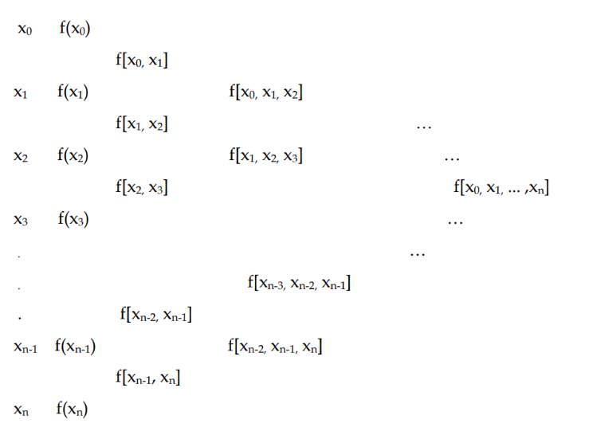
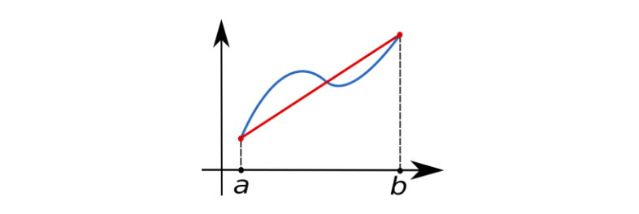
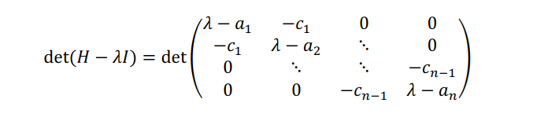

Introduzione
Questi appunti sono un estratto del corso di Analisi Numerica tenuto dalla Professoressa R. M. Pidatella (anno 2021/22) al corso magistrale di informatica dell'Università degli Studi di Catania. Gli appunti non sostituiscono il materiale didattico e consiglio fortemente di approfondire gli argomenti trattati a lezione con gli adeguati libri di testo.
La repository è open su GitHub a questo link. Se trovi errori all'interno del testo, segnalali su GitHub attraverso una issue. Se gli appunti sono stati d'aiuto, valuta di lasciare una star alla repository. Per maggiori informazioni, contattami via email.
Numan - Implementazioni Python
Alcuni degli algoritmi sono implementati in Python nella repository integrativa Numan.
1. Teoria degli errori
Si vuole stimare l'influenza degli errori sulla soluzione, ovvero di quanto la soluzione calcolata si discosti da quella reale .
Errore assoluto
Calcola la bontà dell'approssimazione in termini di cifre decimali.
Errore relativo
Calcola la bontà dell'approssimazione in termini di cifre significative. È spesso rappresentato in percentuale ed utilizzato per avere una rapida intuizione della grandezza dell'errore.
L'errore relativo è una migliore stima della bontà dell'approssimazione, tranne quando è prossimo a zero. Solitamente è più importante, poiché tiene in considerazione la grandezza dei numeri rispetto all'errore.
Approssimazioni corrette
Mentre con le cifre decimali ci riferiamo a tutte le cifre dopo la virgola, con cifre significative indichiamo le cifre necessarie ad esprimere il risultato di una misura con la precisione con cui è stata fatta.
-
Diciamo che è una corretta approssimazione di a cifre decimali se
- prime 2 cifre decimali uguali
-
Diciamo che è una corretta approssimazione di a cifre significative se
- prime 5 cifre significative uguali
Stime errore relativo
Il numero di cifre significative dà una stima dell'errore relativo. Consideriamo due numeri 990 e 110 con 2 cifre significative. L'errore sarà di , quindi avremo che , quindi il range in cui varia l'errore relativo è . Si può stilare una tabella con la corrispondenza cifre significative - errore relativo.
Metodi iterativi
Lavoreremo spesso con metodi iterativi, che permettono di determinare una successione di soluzioni approssimate che converge alla soluzione esatta del problema . Per ciascuna iterazione possiamo definire un errore come segue: Il metodo si dice convergente se si ha che:
Ordine di convergenza
Dopo aver definito la nozione di convergenza di un metodo iterativo (def. dipendente dalla norma utilizzata), si passa a definire l'ordine di convergenza. Diciamo che il metodo ha ordine di convergenza se: La seconda vale definitivamente a partire da un sufficientemente grande e per qualche costante . L'ordine di convergenza esprime il numero di cifre decimali che il metodo guadagna, ad ogni iterazione, rispetto alla soluzione esatta.
Altro sui metodi iterativi
Il metodo potrebbe iterare all'infinito, per cui bisogna stabilire un criterio di arresto. Per ogni tipo di problema è possibile progettare diversi algoritmi, che verranno valutati in base a:
- Stabilità
- Efficienza - Complessità computazionale
- Occupazione dello spazio
Esempio: Metodo di Gauss
Nel caso di un sistema lineare, il numero caratteristico del problema è il numero di equazioni del sistema che, in un sistema con matrice dei coefficienti quadrata, è uguale al numero delle incognite . Nel caso del metodo di Gauss, che esamineremo più avanti, la complessità computazionale è .
Esempio: Schema di Horner
Lo schema di Horner serve ad abbassare il costo computazionale del calcolo di un polinomio. Si vuole eseguire il calcolo di: Sono necessarie 3 somme e 6 moltiplicazioni per un totale di 9 operazioni floating point (flops). In generale, per calcolare: Occorrono somme ed moltiplicazioni, per un totale di Se invece si applica lo schema di Horner: Otteniamo somme ed moltiplicazioni per un totale di flops.
Sistemi di numerazione
I sistemi di rappresentazione numerica sono posizionali, ovvero ogni cifra occupa una posizione corrispondente ad una potenza della base del sistema adottato. Una fonte di errore è data dal passaggio da un sistema di numerazione all'altro. Scelta una base , ogni reale può essere scritto come Dove , . La rappresentazione è univoca a meno che il numero non necessiti di infinite cifre consecutive (in decimale ad esempio: 0.1299999...), allora una rappresentazione equivalente consiste nel sopprimere la successione aggiungendo un'unità all'ultima cifra rimasta (dall'esempio precedente: 0.13).
Teorema
Sia e la base, sia un numero reale, allora esiste unico ed una successione di numeri naturali tale che Dove
- definitivamente
Piccolo hint: sembra somigliare alla notazione scientifica.
Rappresentazione numerica in un calcolatore
In un calcolatore lo spazio di memoria è finito, e la sommatoria precedente si può estendere fino ad un numero finito.
Rappresentazione in virgola fissa
In sintesi cifre prima della virgola, cifre decimali, cifre totali. Un bit è solitamente conservato per il segno.
Rappresentazione in virgola mobile
La posizione della virgola non è fissa, ma è data dall'esponente. Un numero di cifre è riservato alla mantissa , un numero è riservato all'esponente . Un bit è solitamente conservato per il segno. I bit della mantissa determinano la precisione con cui viene rappresentato un numero, mentre i bit dell'esponente determinano il massimo ed il minimo numero rappresentabili.
Insieme dei numeri macchina
L'insieme dei numeri macchina è l'insieme dei numeri reali che sono rappresentabili attraverso una mantissa da cifre e il cui esponente sta tra due interi (lower) ed (upper) definiti nel calcolatore. Lo 0 è rappresentato a parte poiché ha una rappresentazione particolare. L'insieme è finito e numerabile ed ha la seguente cardinalità: La rappresentazione non è unica, ma si dice normalizzata se e la mantissa (in pratica le regole utilizzate nella notazione scientifica).
Memorizzazione esponente
Tenendo conto che il lower bound dell'esponente è un numero negativo (minimo numero rappresentabile) allora per conservare un esponente si memorizza , e dato che allora .
Conversione decimale-binario
La parte intera si divide per due: se c'è il resto si mette 1, altrimenti si mette 0 e si assegnano potenze di due crescenti.
La parte decimale si moltiplica per 2 (divide per 1/2), se il prodotto è minore di 1, allora si ha 0, altrimenti si ha 1. Quando il numero diventa maggiore di 1 si sottrae 1 procedendo come prima.
0.2 | 2 => 0 x 2^-1
0.4 | 2 => 0 x 2^-2
0.8 | 2 => 1 x 2^-3
1.6 | 2 => 1 x 2^-4
... (periodico)
0.2 = .0011
In questo caso abbiamo una rappresentazione finita in decimale ed una rappresentazione approssimata in binario, e ciò da luogo ad un errore di arrotondamento (round-off).
Conversione decimale a base qualunque
Sia un numero in base 10 che vogliamo convertire in base . Sia la conversione attesa. Dividendo per sia ha: Dove . Quindi l'ultima cifra della rappresentazione non è che il resto intero di . Per ottenere la penultima cifra si divide ed il procedimento si arresta ad tale che .
Scegliere la rappresentazione in floating point
Dato come scelgo ? Si hanno i seguenti casi:
- Underflow (esponente troppo piccolo)
- Si emette un warning e si pone
- Overflow (esponente troppo grande)
- Segnale di errore e arresto del programma
- Se , allora si procede:
- Se per allora il numero è in e
- Altrimenti si ha:
- (Chopping) Si esclude la parte destra della -esima cifra
- (Rounding) Si arrotonda in base alla -esima cifra
Epsilon macchina
Tutti i floating point che hanno lo stesso esponente hanno una spaziatura , questo implica che due numeri con lo stesso esponente e consecutivi e sono legati dalla relazione . La spaziatura cambia prima e dopo le potenze esatte della base. L'epsilon macchina è un upper bound dell'errore relativo che si ha arrotondando o troncando la rappresentazione reale per ottenere la rappresentazione in floating point. Dato che parliamo di errore relativo, possiamo studiare l'epsilon macchina limitandoci ad e ai numeri positivi.
Utilizzando il rounding, l'errore assoluto più grande ottenibile è , basta porre un numero reale al centro dello spacing. Il denominatore nell'errore relativo è il numero che stiamo approssimando. Per trovare un upper bound dell'errore relativo, questo numero deve essere il più piccolo possibile. I peggiori errori relativi capitano arrotondando numeri del tipo dove , nello specifico il peggior caso è . Calcolando l'errore relativo, il denominatore è , quindi abbiamo un errore relativo pari a . Questo upper bound è proprio l'epsilon macchina. Utilizzando il chopping, il ragionamento si ripete ma considerando , quindi l'epsilon macchina è proprio pari a .
Aritmetica Standard IEEE
| Bits | Numeri | Epsilon Macchina | Range |
|---|---|---|---|
| 32 | |||
| 64 |
Wobbling precision
I numeri in floating point non sono equispaziati, ma si addensano in prossimità del più piccolo numero rappresentabile. All'interno dell'intervallo i punti sono equispaziati e la loro distanza è . Ogni volta che si diminuisce o aumenta l'esponente , diminuisce o aumenta la spaziatura. Il fenomeno è detto wobbling precision ed ha un andamento oscillatorio
Condizionamento e stabilità
Def. Consideriamo il problema: trovare tale che , dove è il dato (o i dati) da cui dipende la soluzione ed è la relazione funzionale che lega e . Diremo che tale problema è ben posto, se per un certo dato, la soluzione esiste, è unica e dipende con continuità dai dati.
L'unicità e l'esistenza della soluzione sono problemi analitici, mentre la dipendenza è un problema numerico. La dipendenza continua dei dati significa che piccole perturbazioni dei dati danno luogo a piccole variazioni della soluzione, dove "piccolo" può essere inteso in senso relativo o assoluto. Nascono due problemi, ci si chiede:
- Alterando i dati del problema, di quanto si altera la soluzione?
- Come si propagano gli errori?
Numero di condizionamento
Il primo problema è connesso con la dipendenza continua dai dati della soluzione e può essere stimato con il numero di condizionamento del problema, numero che non dipende dall'uso dell'aritmetica finita del calcolatore, ma dal tipo di problema.
Def. Sia la perturbazione applicata ai dati, che scatena una variazione nella soluzione, quindi . Diremo numero di condizionamento relativo il valore ottenuto come segue: Se si calcola il numero di condizionamento assoluto:
Se è grande allora il problema è mal condizionato. Se un problema è ben posto ma è grande basta riformulare il problema.
Propagazione dell'errore
Il problema (2) dipende dalla stabilità dell'algoritmo. Ad ogni problema numerico si possono associare più algoritmi.
Un algoritmo è stabile se la propagazione degli errori dovuti all'aritmetica di macchina è limitata.
Un algoritmo è più stabile di un altro se in esso l'influenza degli errori è minore.
Errori dovuti a operazioni aritmetiche
In generale, i risultati di operazioni aritmetiche tra numeri macchina non sono numeri macchina. Indichiamo con il valore reale di un calcolo, dove con indichiamo una tra le 4 operazioni. Quando tale risultato non appartiene ai numeri macchina , indichiamo la sua approssimazione con . Chiamiamo round-off error la differenza Tale errore si può minimizzare con degli accorgimenti.
Esempio con somma. Quando un calcolatore somma due numeri, porta il secondo numero allo stesso ordine del primo (stesso esponente) e somma la mantissa (da cifre) in un accumulatore da cifre, dopodiché aggiusta l'esponente. Questo può portare alla non validità della proprietà commutativa, distributiva ed associativa della somma e della moltiplicazione.
Esempio numerico. Supponiamo e di voler eseguire la somma , dove e per abbiamo . Nella prima somma avremo , quindi portiamo tutto all'ordine di : , ma essendo che la mantissa ha 4 cifre, la somma che viene calcolata è che rimane . Questo non avviene calcolando prima la somma tra i termini e dopodiché , quindi non vale la proprietà commutativa. Per minimizzare l'errore conviene sommare i numeri in base alla loro precisione, dal più piccolo al più grande (in valore assoluto).
Se è arrotondato correttamente (rounding, come nel sistema IEEE), allora a meno di underflow o overflow si ha che: In realtà, per evitare errori dovuti ad underflow si aggiunge una piccolissima quantità () che da luogo ad una "eccezione" che viene segnalata da un flag.
Errori nelle 4 operazioni
Consideriamo l'errore nella forma precedente, per l'errore assoluto si ha:
- Somma algebrica:
- Prodotto:
- Divisione:
Per l'errore relativo si ha:
Prodotto: Divisione: Somma algebrica: Pertanto abbiamo che:
- La sottrazione va bene per l'errore assoluto, ma si ha un errore relativo grande se .
- Il prodotto va bene per l'errore relativo, l'errore assoluto dipende dall'ordine di grandezza dei fattori.
- La divisione va bene per l'errore relativo, l'errore assoluto è grande se .
2. Richiami sulle matrici
Inserirò solo teoremi e definizioni non di base.
Traccia
La traccia di una matrice è definita solo per matrici quadrate ed è la somma degli elementi della diagonale principale.
Proprietà sulla traccia
Prop 1. Calcolare la traccia è una trasformazione lineare:
Prop 2. Una matrice e la sua trasposta hanno la stessa traccia
Prop 3. Data una matrice di dimensione ed una matrice di dimensione allora
Prop 4. La traccia è pari alla somma degli autovalori della matrice.
Tipi di matrici
Esploriamo alcune definizioni particolari.
Matrice trasposta coniugata
La matrice A \in \C^{m\times n} con elementi complessi ha una trasposta coniugata , ovvero una semplice trasposta dove ogni elemento è il coniugato dell'elemento corrispondente in : .
Matrice di Hessemberg
Una matrice di Hessemberg è una matrice triangolare superiore in cui è aggiunta una subdiagonale inferiore. La regola è che l'elemento se oppure .
Matrice definita positiva e negativa
Una matrice simmetrica si dice definita positiva se e si ha . Si dice definita negativa il viceversa con (). Se si usa il minore-maggiore uguale, allora anziché definita la matrice è semidefinita.
Matrice diagonalmente dominante
Una matrice è strettamente diagonalmente dominante se per ogni riga, la somma dei valori assoluti degli elementi non in diagonale è minore stretta del valore assoluto dell'elemento in diagonale. Se anziché essere minore stretta è minore o uguale, allora la matrice si dice debolmente diagonalmente dominante.
Matrici unitarie, ortogonali e normali
- Matrice unitaria: da cui
- Matrice ortogonale: da cui
- Matrice normale:
Teoremi sul determinante
Regola di Laplace per il determinante
Sia la matrice privata dell'-esima riga e della -esima colonna. Si definisce complemento algebrico dell'elemento il numero definito come segue: Si definisce il determinante di sviluppato rispetto all'-esima riga come segue:
Teorema di Binet
Date due matrici moltiplicabili si ha che .
Teorema di Sylvester
Indichiamo con la matrice formata dalle prime righe e colonne. Una matrice simmetrica si dice definita positiva se e solo se per .
Corollario del teorema di Sylvester
Sia una matrice simmetrica, diagonalmente dominante a diagonale positiva, allora la matrice è definita positiva.
Matrice non degenere
Una matrice non degenere è una matrice con determinante non nullo.
Teoremi sulla matrice inversa
Costruzione della matrice inversa
Sia la matrice trasposta dei complementi algebrici, tale matrice gode della seguente proprietà: Questo implica che per ottenere l'inversa di basta calcolare Per calcolare direttamente ogni elemento dell'inversa basterà calcolare come segue:
Unicità dell'inversa
La matrice inversa quando esiste è unica.
Dimostrazione (per assurdo). Supponiamo che esista una matrice diversa da e tale che . Allora si ha , assurdo .
Inversa del prodotto tra matrici
Siano non degeneri e sia , che per il teorema di Binet è non degenere. Allora si ha che (si noti l'inversione).
Norme vettoriali e matriciali
Norma p o norma Holderiana
Sia , la norma è definita come segue:
|x|p = \root{p}\of{\sum{i} | x_i |^p}
Definiamo le norme più comuni come segue:
\begin{split}
& |x|1 = & \sum_i |x_i| \hspace{1cm} & \text{norma 1} \ & |x|2 = & \sqrt{\sum_i x_i^2} \hspace{1cm} & \text{norma 2} \ & |x|\infty = & \max{i} |x_i| \hspace{1cm} & \text{norma }\infty \
\end{split}
Norme equivalenti in spazi discreti
In le norme sono equivalenti, ovvero esistono con tali che: Dove e possono essere due norme distinte tra le sopracitate.
Norme matriciali indotte
Credits: Advanced LAFF, Robert van de Geijn
Supponiamo di avere una trasformazione lineare L: \C^n \to \C^m e supponiamo di voler misurare quanto il vettore x \in \C^n venga magnificato dalla trasformazione. Per avere una sorta di magnitudo del vettore utilizziamo la norma vettoriale . Per capire il grado di magnificazione dato dalla trasformazione potremmo considerare il rapporto tra la norma del vettore di output e quella del vettore di input, come segue: Supponiamo ancora che per descrivere vogliamo trovare che ci dia il massimo rapporto: Abbiamo quindi una definizione della magnificazione data da , quindi potremmo costruire la norma di basandoci su questo concetto: Se abbiamo una matrice che definisce la trasformazione lineare , ovvero , allora possiamo definire la norma matriciale di come: La norma matriciale di si dice indotta dalla norma vettoriale utilizzata. Ritornando alla trasformazione, se effettuiamo prima lo scaling e dopodiché trasformiamo, il risultato non cambia. Questo vuol dire che le due seguenti espressioni sono equivalenti: Ma è un vettore unitario, quindi possiamo scrivere: L'insieme ha il massimo ed il minimo inclusi (compact set), quindi l'estremo superiore combacia con il massimo. Possiamo effettuare esattamente gli stessi passaggi con la norma matriciale indotta, quindi: Dalle norme vettoriali vengono indotte le omonime norme matriciali:
\begin{split}
||{x}||1 = \sum_i \abs{x_i} & \to & ||{A}||1 = \max{1 \le j \le n} \sum{i=1}^n |a_{ij}|\ ||{x}||2 = \sqrt{\sum_i x_i^2} & \to & ||{A}||2 = \sqrt{\rho(A^* A)} \ ||{x}||{\infty} = \max{i} \abs{x_i} & \to & ||{A}||\infty =\max{1 \le i \le n} \sum_{j=1}^n |a_{ij}|\
\end{split}
Nota: nella norma 1 si prende la somma in valore maggiore assoluto della colonna, mentre nella norma infinito si prende la stessa somma, ma della riga.
Autovalori e autovettori
Definizione classica
Sia diciamo che è autovalore di se \exist \bar x \in \C^n che chiameremo autovettore, , tale che o analogamente . Definiamo l'insieme degli autovalori di .
Autovalore nullo
Una matrice contiene un autovalore nullo se e solo se è singolare ().
Raggio spettrale
Il raggio spettrale è l'autovalore più grande in valore assoluto: .
Trasformata per contragradienza (simili)
Siano ed esista e sia , allora si dice trasformata per contragradienza di mediante . Due matrici trasformate per contragradienza l'una dall'altra si dicono simili.
Proprietà matrici simili
Se e sono simili allora:
- e per .
- e sono simili.
- se allora anche
Matrice diagonalizzabile
si dice diagonalizzabile se è simile ad una matrice diagonale.
6 rapide proprietà sugli autovalori
- La matrice e la sua trasposta hanno gli stessi autovalori.
- Due matrici simili hanno gli stessi autovalori.
- Una matrice degenere ha almeno un autovalore nullo.
- Se è autovalore di ed esiste l'inversa, allora è autovalore di .
- Se è autovalore di con autovettore , è autovalore di con lo stesso autovettore ()
- Se è autovalore di , allora è autovalore di con .
Molteplicità degli autovalori
Definiamo:
- Molteplicità algebrica: molteplicità come radice del polinomio caratteristico.
- Molteplicità geometrica: numero di vettori linearmente indipendenti associati ad esso.
Teorema dei cerchi di Gershgorin
Sia una matrice quadrata . Il teorema di Gerschgorin ci fornisce esattamente dischi nel piano complesso (dato che gli autovalori possono anche essere complessi) all'interno dei quali risiede un (vedasi note) autovalore. Viene creato un disco per ogni riga della matrice, centrato nell'elemento e di raggio calcolato come segue:
\rho_i = \sum_{j=1, j \ne i}^{n} \abs{a_{ij}} \hspace{1cm} i=1, \dots, n
Possiamo definire ognuno dei dischi matematicamente come segue:
\gamma_i = \big{ z \in \C : \abs{z - {a_{ii}}} \le \rho_i \big} \hspace{1cm} i=1, \dots, n
Note In realtà il teorema non ci dimostra che in un cerchio risieda un solo autovalore, o che ce ne sia almeno uno. Una estensione del teorema dimostra che se il disco non interseca con altri dischi, allora contiene uno ed un solo autovalore.
Possiamo concludere che, definendo l'insieme dei dischi allora: Dove è lo spettro di , ovvero l'insieme dei suoi autovalori. La dimostrazione è contenuta nel documento della professoressa ed è molto simile a quella indicata nel video.
Conseguenze del teorema
Una matrice strettamente diagonalmente dominante è non degenere.
Dimostrazione (per assurdo). Supponiamo che , strettamente diagonalmente dominante, sia degenere, quindi . Questo implica che per i teoremi precedenti, e quindi per il teorema di Gershgorin è all'interno di uno dei dischi! Ovvero esiste il disco i-esimo tale che:
|0 - a_{ii}| \le \rho_i \Longrightarrow |a_{ii}| \le \sum_{j=1, j \ne i}^{n} \abs{a_{ij}}
Il che è assurdo per ipotesi di matrice strettamente diagonalmente dominante.
Teorema di Hermite
Se la matrice è hermitiana, ovvero (uguale alla sua trasposta coniugata) allora gli autovalori sono tutti reali. Il teorema vale anche per matrici simmetriche, quindi se , a patto che sia anche definita positiva.
Teorema sulle matrici diagonalizzabili
Una matrice è diagonalizzabile se e solo se ha autovettori linearmente indipendenti.
Teorema di Shur
Sia A \in \C^{n\times n} allora esiste una matrice unitaria tale che dove è triangolare superiore. Se è reale, allora è ortogonale.
Matrice convergente
Una matrice si dice convergente se (matrice zero).
Altri teoremi
- Una matrice hermitiana è diagonalizzabile
- Una matrice è convergente se il raggio spettrale è inferiore a 1
- Il raggio spettrale è sempre minore o uguale alla norma della matrice
- Una matrice è convergente se la norma dell'esponenziazione della matrice tende a 0
3. Risoluzione di Sistemi Lineari
Definizione problema
Sia e vogliamo trovare un vettore che soddisfi l'equazione .
Tratteremo solo sistemi quadrati, in cui esiste un'unica soluzione se e solo se:
- esiste l'inversa della matrice
- oppure il rango della matrice è
- oppure e in tal caso
Teorema di Cramer
Se il determinante della matrice è non nullo, allora esiste unica una soluzione del sistema, ed è data da: Dove è a cui sostituiamo l'-esima riga con il vettore dei termini noti.
Numero di condizionamento nei sistemi lineari
Sia una matrice quadrata, il numero di condizionamento della matrice è un valore che misura la sensibilità della soluzione di alle perturbazioni nei dati. Idealmente vorremmo lavorare con matrici con numero di condizionamento basso. Supponendo l'esistenza dell'inversa, si calcola come segue:
La matrice identità ha il più basso numero di condizionamento (1) ed è l'esempio perfetto di matrice ben condizionata nel caso della risoluzione di un sistema lineare associato.
In generale, in numero di condizionamento è correlato all'errore sui dati come segue:
Problemi di calcolo del numero di condizionamento
La complessità del calcolo della matrice inversa cresce insieme alla crescita del numero di condizionamento. Ma per calcolare il numero di condizionamento è necessaria la matrice inversa! Affermiamo che:
- Se è vicino ad 1 allora è facilmente calcolabile
- Se è grande, allora è difficilmente ricavabile
Correlazione tra numero di condizionamento e raggio spettrale
Supponendo l'esistenza dell'inversa, è presente la seguente relazione tra i due valori: Questo implica che: Banalmente al numeratore è presente il raggio spettrale di . Sappiamo che se esiste autovalore di , allora è autovalore di . Dato che invertiamo tutti gli autovalori, l'autovalore più piccolo di , una volta invertito, diventa l'autovalore più grande di :
Matrice di Hilbert
La matrice di Hilbert è un esempio di matrice mal condizionata per i sistemi lineari (ma è ben condizionata per altri problemi). In generale, l'elemento , approfondire qui.
Metodi diretti
I metodi diretti trovano la soluzione del sistema lineare in un numero finito di passi. Sono adatti a sistemi con matrici piene, essendo che tendono a rimpire gli zeri della matrice.
Metodo delle sostituzioni in avanti
Supponiamo che la matrice del sistema sia triangolare inferiore. Il metodo delle sostituzioni in avanti risolve il sistema una soluzione per volta. Partendo da come segue: Si calcola il generico
Metodo delle sostituzioni indietro
Supponiamo che la matrice del sistema sia triangolare superiore. Il metodo delle sostituzioni indietro risolve il sistema una soluzione per volta, partendo dal basso. Partendo da come segue: Si calcola il generico
Complessità metodi di sostituzione e considerazioni
I metodi di sostituzione presentati eseguono circa divisioni e moltiplicazioni e somme algebriche, per un costo computazionale . Per derivare la complessità basta osservare che nella prima iterazione facciamo 1 div/mul, nella seconda 2, nella terza 3 e così via. Avendo righe totali basta calcolare la somma dei primi numeri naturali, che corrisponde proprio alla prima formula mostrata.
Questi metodi sono molto leggeri, ma necessitano di matrici triangolari. Gli altri metodi presentati cercheranno di triangolarizzare la matrice, per poi utilizzare i metodi di sostituzione per risolvere il sistema lineare. Se dell'istanza del problema cambia solo il vettore dei coefficienti, è possibile precalcolarsi alcuni dei parametri per rendere il metodo più rapido.
Metodo di eliminazione naive di Gauss (MEG)
Supponendo che la matrice sia non degenere, e sia (altrimenti scambia righe), allora è possibile applicare il metodo di Gauss (a meno di un'altra condizione che enunceremo dopo). Alla prima iterazione si calcolano i moltiplicatori: Aggiungiamo alla -esima equazione la prima equazione moltiplicata per . Così facendo andremo ad annullare tutti gli elementi della prima colonna meno che il primo. In generale, durante la -esima iterazione lo scopo è annullare tutti gli elementi della -esima colonna al di sotto dell'-esimo, quindi si calcolano i moltiplicatori tramite l'elemento , che prende il nome di pivot: E si aggiunge l'-esima equazione alle successive moltiplicata per il rispettivo moltiplicatore. Al passo si ottiene un sistema triangolare superiore che può essere risolto con la sostituzione all'indietro. Il costo computazionale del metodo è circa .
Affinché il metodo funzioni è necessario che gli elementi della diagonale siano non nulli ad ogni iterazione. Questo è garantito se tutti i minori principali di sono non nulli.
MEG con Pivot Parziale
La tecnica del pivot parziale evita le divisioni per zero o per numeri prossimi allo zero nel calcolo dei moltiplicatori. Alla -esima iterazione si cerca la riga con l'elemento maggiore nella colonna . Si sostituisce la riga -esima con la riga -esima. Il beneficio sta nel fatto che viene minimizzata la grandezza del moltiplicatore, minimizzando anche l'errore amplificato durante le moltiplicazioni. La complessità totale del metodo è .
MEG con Pivot Totale
Il pivot totale ha gli stessi benefici del pivot parziale, ma amplificati: il metodo può scegliere tra tutti gli elementi della matrice (incompleta) e non solo quelli della colonna analizzata. Il drawback sta nella complessità implementativa e nel cambio di variabile necessario.
Supponiamo che il pivot corrente sia e che l'elemento più grande della matrice sia . Allora prima si effettua una permutazione delle colonne e si memorizza il cambio di variabile, e dopodiché si scambiano le righe . Quando si ottiene la soluzione, per ottenere la soluzione rispetto al problema originale bisogna applicare i cambi di variabile a ritroso alla soluzione.
Fattorizzazione LU
Sia il sistema lineare da risolvere, un metodo di fattorizzazione matriciale consiste nei seguenti passi:
- Si trova una matrice non singolare tale che e triangolare superiore.
- Se è triangolare inferiore, lo sarà anche e poniamo
- Osserviamo che quindi è una fattorizzazione di
La fattorizzazione non dipende dai termini noti, quindi se nel sistema lineare in analisi variano solo i termini noti, precalcolando la fattorizzazione si ha un risparmio in efficienza. Attraverso la fattorizzazione LU riformuliamo il metodo di eliminazione di Gauss. Siano: dove per sono i moltiplicatori mostrati in precedenza. Il prodotto equivale al primo passo di Gauss. In generale, la matrice è definita come segue: Alla fine si ha: Poniamo , quindi . Poniamo e osserviamo che: Adesso, la soluzione del sistema lineare si risolve in due passaggi:
- e si risolve per
- e si risolve per
Questo poiché con il passo (1) si trova , mentre con il passo 2 si trova , che è sicuramente soluzione del sistema , ed entrambi possono essere risolti con sostituzioni in avanti ed indietro, essendo matrici triangolari inferiori (L) e superiori (U).
Non sempre esiste una fattorizzazione LU della matrice. Condizione necessaria di esistenza è che la matrice sia non degenere, quindi che abbia il determinante non nullo. Se vale tale condizione, allora esiste sicuramente una matrice di permutazione tale che . L'esistenza è garantita per le matrici diagonalmente dominanti e simmetriche definite positive, senza dover permutare la matrice.
Matrici di permutazione
Le tecniche del pivot parziale e totale possono essere implementate nella forma matriciale del metodo di eliminazione di Gauss attraverso delle matrici di permutazione. Una matrice di permutazione è una matrice ottenuta scambiando righe o colonne della matrice identità. In particolare, scambiando la riga con la riga di e
- premoltiplicandola per si scambiano le righe
- postmoltiplicandola per si scambiano le colonne
Esempio: scambiamo la riga 1 e la riga 3 della matrice identità e vediamo cosa succede se la premoltiplichiamo ad una matrice qualunque: L'effetto è stato uno scambio di righe. Se invece postmoltiplichiamo la matrice di permutazione: L'effetto è stato uno scambio di colonne.
Metodo di Doolittle e di Croud
Se esplicitassimo il sistema lineare avremmo equazioni (una per ogni elemento di ) ed incognite (elementi di ed supponendo che siano rispettivamente triangolari inferiore e superiore), questo implica che abbiamo gradi di libertà, ovvero la fattorizzazione non è unica.
I seguenti metodi eliminano i gradi di liberta imponendo dei vincoli:
- Doolittle: si fissa in (equivalente a eliminazione gaussiana senza pivot)
- Crout: si fissa in
Effetto Fill-in
I metodi di fattorizzazione modificano la matrice iniziale causando un effetto fill-in, ovvero gli zeri diventano elementi non nulli. Se la matrice è inizialmente sparsa, conviene optare per metodi iterativi.
Metodo di Cholesky
Sia una matrice simmetrica () e definita positiva, allora esiste almeno una matrice triangolare inferiore tale che . Inoltre, se si impone che la fattorizzazione è unica.
Dimostrazione (costruttiva).
Per il criterio di Sylvester, la matrice ha determinante strettamente positivo, e quindi esiste una fattorizzazione LU. Proviamo a costruire la fattorizzazione come segue: Dato che le incognite sono gli elementi di , che sono , possiamo strutturare equazioni (non lineari) tramite il prodotto riga-colonna.
Esplicitiamo il calcolo dell'elemento supponendo che (le moltiplicazioni per indici maggiori di sono nulle per la triangolarità delle matrici), quindi abbiamo: Estraiamo l'elemento dall'equazione: Vediamo invece come calcolare un elemento della diagonale . Tramite la seguente equazione cerchiamo di calcolare l'elemento : Oss. la sommatoria termina a e non ad perché per la struttura triangolare della matrice gli elementi sono nulli. Ora possiamo estrapolare l'elemento come: Calcolando la sommatoria verrebbe annullata, quindi . Bisogna seguire un certo andamento per poter calcolare tutti gli elementi di , dato che un calcolo potrebbe richiedere dei calcoli di altri elementi della matrice. Nella seguente foto è illustrato tale andamento su una matrice :

Algoritmo di Thomas
L'algoritmo di Thomas è un TDMA (tridiagonal matrix algorithm), ovvero un algoritmo che opera su matrici tridiagonali. Una matrice tridiagonale di dimensione ha elementi. Scriviamola come prodotto di due matrici particolari, in cui le incognite sono per e per .

I coefficienti sono determinabili come segue:
- e per
- e per
Per una trattazione completa consultare il seguente documento.
Metodi iterativi
Un metodo iterativo produce una successione di soluzioni che, sotto opportune condizioni, converge alla soluzione reale. Comunemente si parte da una soluzione randomica , in quanto si dimostra che il metodo converge comunque.
Descrizione generale di un algoritmo iterativo
Sia una matrice non degenere, si impone che: Quindi si ha: E quindi si determina la soluzione al passo dalla soluzione al passo precedente: L'equazione prende il nome di decomposizione, e si dice regolare se non è degenere e gli elementi dell'inversa e di sono tutti maggiori di zero. Spesso la matrice viene chiamata "matrice del metodo" a cui si fa riferimento, poiché studiandola è possibile studiarne la convergenza.
Criteri d'arresto
Fissata una tolleranza , allora un criterio d'arresto standard utilizzabile per fermare un algoritmo iterativo è il seguente:
Metodo iterativo convergente
Un metodo iterativo si dice convergente se per qualunque vettore iniziale il metodo sarà convergente.
Teorema sulla convergenza (1)
Sia una decomposizione regolare di e sia . Allora:
- non è singolare
- Il metodo iterativo associato alla decomposizione è convergente
- ci dà un limite all'errore commesso
Teorema sulla convergenza (2)
Condizione necessaria e sufficiente affinché il metodo iterativo sia convergente è che il raggio spettrale della matrice sia minore di 1:
Corollario sulla convergenza (3)
Dato che il determinante di una matrice è anche definito come il prodotto dei suoi autovalori, allora condizione necessaria affinché il metodo converga è che Se il determinante è maggiore di 1 allora esiste almeno un autovalore , e quindi il metodo non può convergere per il teorema precedente.
Corollario sulla convergenza (4)
La traccia di una matrice è definita come la somma dei suoi autovalori. Condizione necessaria affinché il metodo converga è che: Se vale il contrario, allora almeno uno degli autovalori è , quindi il metodo non può convergere per il teorema precedente.
Correlazione tra raggio spettrale e convergenza
Il raggio spettrale relativo alla matrice di uno specifico metodo è correlato alla convergenza dello stesso come segue:
- Se il metodo diverge
- Se il metodo converge
- Tanto più si avvicina ad 1, tanto più il metodo convergerà lentamente
Velocità di convergenza di un metodo iterativo
Tramite la seguente valutazione è possibile ricavare il numero di iterazioni affinché l'errore generato da un certo metodo scenda al di sotto di un errore assegnato . Siano ed rispettivamente l'errore e la soluzione generati al passo . L'errore è ricavato come segue: Che deriva dalla formula di approssimazione dell'errore, dove l' soluzione reale viene approssimato con la soluzione calcolata allo step successivo. È possibile calcolare un lower bound del numero di iterazioni necessarie a far scendere l'errore sotto , come segue: Dove è la matrice del metodo. Sia il fattore di convergenza del metodo iterativo, definito come segue: Allora si avrà: Più grande è , più la convergenza sarà veloce. Da questo deriva che più è vicino ad 1, più l'intero denominatore si annulla e più le esecuzioni necessarie crescono. Se il logaritmo assumerà un valore negativo che è più grande tanto più è vicino allo zero.
Metodo di Jacobi
Partendo da una soluzione iniziale , la soluzione si determina dalla soluzione come segue:

Condizione sufficiente di convergenza per Jacobi
Sia il sistema da risolvere, condizione sufficiente affinché Jacobi converga è che sia strettamente diagonalmente dominante.
Formulazione matriciale
La decomposizione presa in considerazione nel metodo è la seguente: Se si pone ed allora si ottiene la decomposizione classica: Le tre matrici rappresentano:
- la diagonale principale di
- gli elementi al di sotto della diagonale principale di , cambiati di segno.
- gli elementi al di sopra della diagonale principale di , cambiati di segno.
Dalle matrici, ritroviamo l'equazione di aggiornamento del metodo di Jacobi: Applichiamo gli indici all'ultimo passaggio per indicare l'aggiornamento:
Ricordiamo che l'inversa di una matrice diagonale è pari al reciproco dei singoli elementi non nulli.
La matrice del metodo è e studiandola è possibile studiare la convergenza.
Metodo di Gauss-Seidel (GS)
È una variante del metodo di Jacobi che sfrutta il calcolo delle componenti precedenti della soluzione corrente per calcolare le successive. Si vede empiricamente che il metodo converge spesso più velocemente rispetto a quello di Jacobi (quindi il raggio spettrale di GS è minore). Nell'esempio sottostante, gli apici rossi sono quelli di Gauss-Seidel, mentre quelli neri sono di Jacobi.
Condizione sufficiente di convergenza per GS
Sia il sistema da risolvere, condizione sufficiente affinché Jacobi converga è che sia strettamente diagonalmente dominante o che sia simmetrica definita positiva.
Formulazione matriciale
La formulazione è analoga a quella di Jacobi, ma viene isolata la matrice anziché isolare solo la matrice . Se volessimo affibiare le matrici alla trattazione generale, avremmo che e . Vediamo i passaggi: Supponendo l'esistenza dell'inversa. Applichiamo gli indici all'ultimo passaggio per indicare l'aggiornamento: La matrice del metodo in questo caso è e studiandola è possibile studiare la convergenza.
Metodo Successive Over-Relaxation (SOR)
SOR è un metodo basato su GS che applica un rilassamento al calcolo della soluzione. Si fissa un certo parametro e si calcola la soluzione utilizzata come la media pesata tra la soluzione di GS e la soluzione precedente:
Formulazione matriciale
Ricaviamo l'equazione di aggiornamento del metodo, partendo dal sistema lineare: Introduciamo la matrice , sostituiamo nell'ultima equazione, e introduciamo gli apici del metodo iterativo: Poniamo: E manipoliamo la matrice come segue: La matrice finale è data da: E studiando non solo è possibile studiare la convergenza del metodo, ma dato il parametro arbitrario sarà possibile aggiustare la matrice per manipolare la sua convergenza.
Teorema di condizionamento del parametro di SOR
Si ha la seguente relazione sempre verificata Da cui osserviamo che:
\begin{cases} \text{SOR diverge} & \omega \le 0 \or \omega \ge 2 \ \text{SOR converge} & 0 < \omega < 2 \end{cases}
Fissato nel range convergente, è possibile muoversi all'interno del range di convergenza per tarare l'algoritmo e renderlo più rapido.
Variante SSOR
Symmetric SOR (SSOR) è una variante di SOR in cui viene preservata la possibile simmetria della matrice.
Metodo di discesa del gradiente
Quando un sistema è molto grande, è possibile risolverlo riconducendolo ad un problema di minimizzazione. Si considera la forma quadratica del problema: Si calcola il gradiente della funzione: Utilizziamo il l'opposto del gradiente come direzione di discesa: Sia la lunghezza del passo di aggiornamento all'-esimo passo, aggiorniamo la soluzione:
4. Interpolazione
Definizione del problema
È un problema di approssimazione di una funzione o di un insieme di dati con una funzione che sia più semplice e che abbia buone proprietà di regolarità. È utilizzata quando i dati sono forniti con precisione. La condizione di interpolazione è che la funzione interpolante e la funzione interpolata coincidano nei nodi che sono le ascisse dei dati.
Interpolazione polinomiale
Nell'interpolazione polinomiale la funzione interpolata sarà un polinomio. Con indicheremo l'insieme dei polinomi di grado minore o uguale ad .
Teorema di Vandermonde
Siano dato gli nodi distinti ed i dati in corrispondenza , allora esiste sempre uno ed un solo polinomio interpolante di grado passante per tutti i punti .
Metodo dei coefficienti indeterminati
Anche detto metodo di Vandermonde, consiste nel ricavare il polinomio risolvendo un sistema lineare. Un polinomio ha coefficienti, che sarebbero le incognite. Se abbiamo nodi allora possiamo facilmente costruire un sistema lineare quadrato per ottenere i coefficienti del polinomioì, e quindi un polinomio che rispetti la condizione di interpolazione. Purtroppo il metodo genera una matrice mal condizionata per il problema dei sistemi lineari al crescere di . Esistono metodi migliori per il problema dell'interpolazione.
Metodo dei polinomi di Lagrange
Si pone il polinomio alla seguente espressione: Dove gli sono i polinomi di Lagrange e sono definibili come una base dello spazio dei polinomi , mentre nei casi precedenti viene usata la base canonica (). La costruzione avviene come segue: Il comportamento di con i nodi è quello di un interruttore: Quindi è ovvio che il polinomio definito precedentemente interpola i nodi, essendo che quando è sottomesso a si attiva e si annullano tutti gli altri, quindi .
Metodo delle differenze divise di Newton
Anche in questo metodo si utilizza una base differente, e si crea come segue: Osserviamo che:
- etc.
Le espressioni successive si annullano a causa di moltiplicazioni per . Una volta osservato questo, bisogna calcolare i termini imponendo che sia soddisfatta la condizione di interpolazione. Per il primo nodo si ha: Vediamo cosa succede per il secondo nodo: Quindi: Questo termine, che somiglia al rapporto incrementale, prende il nome di prima differenza divisa In generale, si ha che per il termine corrisponde alla differenza divisa:
Calcolo delle differenze divise
Un trucco per calcolare le differenze divise è quello di creare una tabella piramidale come segue:

Sia la tabella piramidale, con ci riferiamo all'elemento della colonna . Possiamo riempire la colonna calcolando gli elementi come segue (dalla 3° colonna in poi, dato che le prime due sono note): Le differenze divise che ci interessano stanno nella prima riga della tabella, quindi per , quindi in generale:
Metodo delle differenze
Deriva dal metodo delle differenze divise e si adotta solo nel caso in cui i nodi sono ugualmente spaziati tra loro, e quindi data una spaziatora si può definire una relazione: Se anziché considerare le differenze divise, considerassimo solo le differenze, allora potremmo definire ricorsivamente il seguente schema: Per capire meglio come funzionano, calcoliamo : Si può effettuare il calcolo delle differenze attraverso la tabella, ma senza dividere:
Teorema
Se i nodi sono equispaziati, allora vale che: e vale anche la seguente formula per il calcolo del polinomio interpolante: Dove è ottenuto come . Tramite questa formula è possibile ignorare completamente il calcolo dei coefficienti e valutare il polinomio interpolante in un qualsiasi punto (previa costruzione della tabella che determina le differenze ).
Problemi legati all'interpolazione polinomiale
Un polinomio di grado troppo alto continuerà ad interpolare i nodi, ma tra un punto ed il successivo oscillerà in maniera crescente al crescere di . Vedremo come rimediare quando studieremo le splines.
Interpolazione Lagrangiana
I metodi presentati sino ad ora sono metodi di interpolazione polinomiale lagrangiana. In questi metodi non viene specificato come deve avvenire il passaggio per i punti interpolati, ad esempio sfruttando informazioni relative alle derivate.
Teorema dell'errore nei metodi di interpolazione lagrangiani
Il teorema vale per qualsiasi metodo di interpolazione Lagrangiana.
Sia la funzione da interpolare e siano dati nodi . Sia ovvero siano continue le derivate di . Sia il polinomio interpolante nei nodi stabiliti. Allora l'errore vale esattamente Con e definito come segue Anche se non viene detto come determinare il termine , è comunque possibile studiare l'errore massimo che si può commettere utilizzando il polinomio ottenuto tramite interpolazione lagrangiana: Dimostrazione del teorema.
Nel caso in cui sia un nodo , allora l'espressione è banalmente vera: per la condizione di interpolazione l'errore è nullo. Questo è vero sia nell'espressione , sia in quella seguente, dato che si annulla quando è un nodo.
Fissiamo e ipotizziamo che non sia uno dei nodi. Definiamo una funzione ausiliaria: La funzione ha esattamente zeri:
-
zeri sono dati dalla componente che si annulla sugli nodi
- e da che sugli zeri è zero per la condizione di interpolazione
-
1 zero è dato per
La funzione è differenziabile volte poichè è composta da:
- che è differenziabile volte per ipotesi
- e che essendo polinomi sono differenziabili infinite volte
Il teorema di Rolle enuncia che sotto opportune condizioni (funzione continua e derivabile (esterni esclusi) nel dominio) se allora esiste tale che . Dato che: Allora in ogni intervallo tra due nodi consecutivi contiene un punto al suo interno per cui la derivata prima si annulla. Essendoci nodi, questo ragionamento può essere applicato ai rispettivi intervalli, quindi la derivata prima ha zeri.
Se si reitera il ragionamento otterremo che:
- ha zeri
- ha zeri
- ha zeri
- ha uno zero, che chiameremo
Una volta chiarito qual è lo a cui ci riferiamo, osserviamo come calcolare la formula della tesi.
Lo scopo è quello di calcolare la derivata -esima di . La è per ipotesi derivabile volte, quindi si calcola la derivata. Il polinomio si annulla derivandolo volte. Il termine è tale che: Osserviamo che il polinomio è monico, ovvero il coefficiente del monomio di grado massimo è 1. La derivata di un polinomio monico di grado è semplicemente:
Piccolo hint: deriviamo 4 volte:
Infine ricomponiamo la derivata Inseriamo facendo così annullare la derivata -esima: Riordiniamo l'espressione: Da cui la tesi:
Corollario (correlazione tra errore e differenze divise)
Dal teorema sull'errore e dalle formule delle differenze divise di Newton si ha:
Interpolazione Hermitiana
L'interpolazione hermitiana tiene conto dell'informazione fornita dalle derivate della funzione interpolata. Siano gli nodi, se oltre alla valutazione della funzione nel generico nodo vengono fornite anche le derivate allora si può imporre un passaggio più accurato del polinomio approssimante in quel punto.
Buchi di informazione
Per funzionare, non devono esserci buchi nell'informazione fornita. Per buco intendiamo ad esempio che venga fornita la derivata prima nel punto , ma non il valore della funzione, oppure che venga fornito il valore della derivata seconda e non della derivata prima (etc). Se le informazioni contengono buchi, allora la matrice del sistema lineare associato (Vendermonde) sarà degenere. Se invece non ci sono buchi, quindi per ogni derivata -esima fornita sono state fornite le derivate precedenti ed il valore della funzione valutata sul punto, allora la matrice sarà non degenere e sarà possibile calcolare il polinomio.
Grado del polinomio interpolante
Supponiamo che siano forniti:
- nodi
- valori
- derivate prime
- derivate -esime
Allora il grado del polinomio interpolante calcolato attraverso interpolazione hermitiana sarà
Interpolazione osculatoria
Questo tipo di interpolazione è un caso particolare dell'interpolazione hermitiana, in cui si hanno a disposizione tutti le informazioni di derivate prime oltre che ai valori della funzione nei vari nodi.
Estensione dei teoremi sull'errore
I teoremi sull'errore dell'interpolazione lagrangiana precedentemente enunciati valgono anche in questo caso, con l'unica differenza che nella funzione , se si conosce fino alla derivata -esima di un certo nodo , il termine deve essere elevato alla .
Disposizione dei nodi
Per semplicità lavoreremo sulla interpolazione lagrangiana, ma vale anche per quella hermitiana.
All'aumentare del grado del polinomio, esso oscilla tra i nodi imposti durante l'interpolazione. Questo effetto può essere rilassato andando a giocare sulla disposizione dei nodi, utilizzando quindi dei nodi non equispaziati (campionamento non uniforme).
Triangolazione
Fissata una tipologia di campionamento (uniforme oppure non uniforme) e fissato , la triangolazione di un certo intervallo produce una sequenza di campionamenti di cardinalità . Andando a produrre il polinomio interpolante per ognuno dei campionamenti, si spera che all'aumentare del numero di campioni il polinomio converga alla funzione interpolata .
Teorema di Faber
Per ogni triangolazione esiste una funzione per cui la successione di polinomi non converge uniformemente ad .
Esempio: funzione di Runge con con campionamento omogeneo.
Teorema dell'esistenza della triangolazione ottima
Data allora esiste una triangolazione tale che la successione converge uniformemente ad .
Conseguenze dei teoremi
- Non esistono schemi interpolatori universali.
- Dalla formula dell'errore l'unica cosa che possiamo manipolare è il campionamento
Polinomi di Chebichev
I polinomi di Chebichev sono una classe di polinomi di grado utili alla ricerca dei nodi ottimali presso i quali campionare non uniformemente una qualsiasi funzione che si intende interpolare tramite interpolazione polinomiale. Si lavorerà ipotizzando che il dominio della funzione interpolata sia , in caso contrario, sarà possibile mappare il risultato nel dominio originale della funzione.
I polinomi di Chebichev sono definiti come segue: Quindi per valutare bisogna prima calcolare , e dopodiché . Notiamo che:
- Per si ha
- Per si ha
Otteniamo il polinomio per ed ed utilizziamo le formule di sommazione degli angoli per il coseno: Sommiamo i polinomi e manipoliamo l'equazione: Dove sostituiamo e . Possiamo definire i polinomi di Chebichev ricorsivamente come segue: Sviluppando i polinomi si nota che il grado di è effettivamente . Inoltre, sempre sviluppando i polinomi, ci accorgiamo che il coefficiente del monomio di grado più alto di è , quindi se consideriamo: Avremo un polinomio monico. Questa osservazione ci servirà nei teoremi successivi.
Zeri dei polinomi di Chebichev
Essendo un polinomio di grado , avrà necessariamente zeri . Se utilizziamo la rappresentazione iniziale, esisteranno sicuramente tale che .
Quando si annulla il coseno? Quindi otteniamo: Una volta trovati i , li utilizziamo per trovare gli zeri di : Segue una rappresentazione della funzione di in cui sono evidenti i 6 zeri del polinomio:

Polinomi ortogonali
I polinomi di Chebichev fanno parte di una più grande classe di polinomi chiamati polinomi ortogonali al prodotto interno.
Teorema di minimizzazione dell'errore nel caso di zeri di Chebichev
Sia la funzione utilizzata nella determinazione dell'errore di interpolazione. Tra le possibili scelte degli nodi con si ha che è minima se Quindi se gli scelti sono gli zeri dei polinomi di Chebichev.
Come si eguagliano di due termini? Essendo due polinomi di grado sarà sicuramente possibile passare da una forma all'altra.
Splines
L'idea è che anziché usare un polinomio di alto grado, si suddivide l'intervallo in sottointervalli intermedi e si utilizzano polinomi di grado più basso in ognuno dei sottointervalli. La funzione spline è data dall'unione dei polinomi ottenuti. Ci sono due categorie di spline:
- Spline interpolanti: si interpola nei sottointervalli, ma non garantisce la continuità delle derivate a meno di imporre ulteriori restrizioni.
- Spline approssimanti: si rilassa il vincolo dell'interpolazione, non è obbligatorio quindi interpolare i punti ed il metodo diventa di approssimazione.
Parleremo di spline interpolanti.
Grado della spline
Queste ultime sono descritte da un grado legato alla loro derivabilità. Per ottenere una spline interpolante, è necessario raggruppare i campioni contigui (max ~5 per gruppo) ed interpolare all'interno del gruppo. Otterremo tanti polinomi quanti sono i gruppi. I polinomi vengono poi concatenati per creare la spline. La concatenazione dei polinomi non preserva la derivabilità in quanto crea dei punti angolosi. La spline costruita come descritto prima è di grado 1. Per ottenere una spline di grado , bisogna imporre delle condizioni su tutte le derivate di ordine minore o uguale a .
In pratica si utilizzano spline di grado 1 o 3, poiché propongono un buon trade-off tra efficienza computazionale e approssimazione fornita. Si evita l'utilizzo di spline di grado pari, poiché quelle di grado dispari presentano meno errori di approssimazione.
Polinomio a tratti e definizione di Spline
Un polinomio di grado a tratti è una funzione che in ogni sottointervallo è un polinomio di grado . Tali polinomi sono uniti in modo continuo in modo da interpolare i dati. Ciò comporta che la funzione interpolante possa avere derivate discontinue. È possibile imporre alcune proprietà di continuità alle derivate senza richiedere la conoscenza di tali derivate. Di particolare interesse è il caso in cui le derivate sono continue fino all'ordine se è il grado del polinomio a tratti, in tal caso il polinomio prende il nome di spline di grado k.
Ricordiamoci che non è necessario conoscere le derivate della funzione nei nodi, le condizioni di continuità delle derivate sono imposte tra i polinomi contigui!!
Gradi di libertà
Per grado di libertà si intende il numero di condizioni da imporre nella costruzione della spline per garantire l'univocità di quest'ultima. Se la spline è di grado e si opera su nodi, si dimostra che il grado di libertà è .
Disambiguazione: con gradi di liberta intendiamo anche il numero di condizioni che ci manca da imporre per identificare univocamente .
Spline lineari
Per si hanno le spline lineari. Se determiniamo il grado di libertà, supponendo di avere nodi, otterremo un grado di libertà . Le condizioni sono banalmente soddisfatte attraverso la costruzione di una particolare base. Definiamo le funzioni cappello per come segue: Così definite, avremo che (delta di dirak), quindi le funzioni cappello sono linearmente indipendenti (ortogonali tra loro).
La spline lineare è definita come: Graficamente la spline consiste nell'unire i campioni contigui attraverso delle rette.
Stima dell'errore: sia , si ha che
Spline cubiche
Per si hanno le spline cubiche. Questa volta con nodi ci rimangono 2 gradi di liberta da riempire ( ). Il tipo di spline cubica varia in base a come si impongono i due gradi di libertà:
- Spline naturale: si impone
- Spline periodica: si impone S'_3(x_0) = S'_3(x_n) \and S''_3(x_0) = S''_3(x_n)
- Spline vincolata si impone S_3'(x_0)=y'_0 \and S_3'(x_n)=y'_n con
5. Minimi quadrati
Definizione del problema
Vogliamo creare un polinomio interpolante che passi il più vicino possibile ai campioni indicati, pur mantenendo minimo il grado del polinomio stesso (condizione di interpolazione viene rilassata).
Problema di ottimizzazione dei minimi quadrati
Si definisce polinomio approssimante ottimo per un certo insieme di campioni un polinomio tale che:
Problema di ottimizzazione min-max
Si definisce polinomio approssimante ottimo per un certo insieme di campioni un polinomio tale che:
Legame tra norme e problemi di ottimizzazione
La norma è anche utilizzata per definire la distanza tra due punti nello spazio, quindi data una tolleranza , possiamo dire che approssima se
Norma di funzioni
Si può provare che lo spazio delle funzioni continue sull'intervallo è uno spazio vettoriale. Lo spazio delle funzioni continue è uno spazio infinito-dimensionale. Uno spazio in cui è definita una funzione norma, è detto spazio normato.
Sia definita una funzione continua ed integrabile in , detta funzione peso. Definiamo le tre norme precedenti nel caso continuo come segue:
Non equivalenza delle norme in spazi infinito-dimensionali
Abbiamo visto precedentemente l'equivalenza delle norme in spazi vettoriali di dimensione finita. Per spazi infinito-dimensionali questo non vale. Possiamo osservarlo attraverso la seguente classe di funzioni: Sia la funzione nulla, abbiamo che: Per si ottiene: Le tre norme sono asintoticamente non equivalenti al variare del parametro , il quale identifica la signola funzione all'interno della classe di funzioni.
D'ora in poi faremo implicitamente riferimento alla norma 2 come norma di funzioni.
Miglior polinomio approssimante
Sia uno spazio infinito-dimensionale normato (es. spazio delle funzioni continue in un certo intervallo) e sia uno spazio finito-dimensionale con dimensione (es. polinomi di grado ). Diremo che è la migliore approssimazione di se:
Problemi sottoposti
- (analitico) Esistenza di
- Esiste se è uno spazio normato.
- (analitico) Unicità di
- Esiste unico in uno spazio in cui è definito il prodotto scalare.
- (numerico) Costruzione
- Nel caso della norma due, attraverso i minimi quadrati.
- Nel caso della norma del massimo, attraverso il metodo min-max.
Teorema dell'approssimazione di Weierstrass
Se allora per ogni esiste un polinomio ( non fissato) tale che
Questo implica che per qualunque tolleranza scelta esiste un polinomio di un certo grado che riesce ad approssimare la funzione nei termini di tolleranza.
Problema discreto ai minimi quadrati
Supponiamo di avere un insieme discreto di punti e di voler costruire il miglior polinomio approssimante . In tal caso: Dove il generico pesa l'-esimo errore di misura. Nel caso generale porremo , quindi si avrà il seguente problema di ottimizzazione:
Costruzione del miglior polinomio approssimante
Solitamente il problema di ottimizzazione proposto si traduce in un sistema lineare sovradimensionato, quindi con equazioni ed incognite e dove . Un sistema del genere ha soluzione solo se si trova nell'immagine di . Spesso però questo tipo di sistema non ha una soluzione, ma è comunque possibile calcolare un punto tale che: In pratica, deve essere minimo rispetto ad ogni altra soluzione. Il seguente teorema ci fornisce un metodo di costruzione di tale punto, ovvero il metodo dei minimi quadrati discreto.
Teorema (Sistema classico corrispondente)
Sia un sistema lineare sovradimensionato, allora tale che Sarà soluzione del sistema quadrato
Svantaggi del metodo dei M.Q. discreto
La matrice diventa malcondizionata per il problema dei sistemi lineari al crescere della dimensione di .
Problema continuo ai minimi quadrati
Sia la funzione da approssimare e sia la funzione peso, si deve trovare il polinomio tale che:
Conoscenze preliminari
Richiamiamo dei concetti necessari alla comprensione dell'argomento.
Prodotto scalare
Sia uno spazio vettoriale, il prodotto scalare è definito da una qualunque funzione che rispetti le seguenti proprietà e per ogni :
- Linearità rispetto alla prima componente
- Simmetria
- Linearità rispetto alla seconda componente
- Se almeno una delle due componenti è il vettore nullo allora il risultato è 0
informazioni importanti sul prodotto scalare
- Se per ogni allora il prodotto scalare è definito positivo
- Se allora sono ortogonali rispetto al prodotto scalare
Norma indotta dal prodotto scalare
Sia uno spazio vettoriale in cui è definito un prodotto scalare definito positivo, e sia . Si chiama norma indotta dal prodotto scalare la norma definita come segue:
Disuguaglianza di Cauchy-Schwarz
Siano due funzioni linearmente indipendenti tra loro, allora vale la disuguaglianza di Cauchy-Schwarz:
Base ortogonale
Sia , dove è definito un prodotto scalare e la dimensione , allora è una base ortogonale di se
- è una base di
- e si ha
Vettori ortonormali
Siano , dove è definito un prodotto scalare . Si definisce ortonormale a se:
Base ortonormale
Sia , dove è definito un prodotto scalare e la dimensione , allora è una base ortonormale di se
- è una base di
- e si ha
- per
Oss. Una base ortonormale è anche una base ortogonale.
Normalizzazione di un vettore
Sia una base ortogonale di uno spazio vettoriale in cui è definito un prodotto scalare , ed una norma indotta dal prodotto scalare. Allora è possibile ricavare la rispettiva base ortonormale nel seguente modo:
Settings del problema
Nel problema che ispezioneremo assumeremo che lo spazio vettoriale sia lo spazio delle funzioni continue definite in un intervallo generico . Il prodotto scalare tra due funzioni continue sarà definito come segue: La norma scelta è la norma 2, definita come segue: Dopodiché è necessario porsi nel caso in cui sia la norma che il prodotto scalare siano quantità definite. Per fare ciò si definisce lo spazio ovvero l'insieme delle funzioni a valori reali definite su tali che la quantità sia integrabile.
Si può dimostrare che
A CHE SERVE? Semplicemente a garantire che l'integrale all'interno del prodotto scalare (e quindi anche nella norma) sia sempre definito, e mai infinito o indeterminabile.
Se poniamo la funzione peso allora lo spazio si può esprimere come .
Ridefinizione problema continuo ai MQ
Dopo le conoscenze preliminari ed il setting del problema, possiamo fornire una definizione più chiara. Sia , lo scopo sarà quello di trovare il miglior polinomio approssimante di grado , quindi tale che:
Usiamo la norma per definire un concetto di errore di approssimazione.
Usiamo anziché poiché è un insieme denso e non è detto che abbia il minimo.
Teorema di Fourier delle equazioni normali
Sia uno spazio vettoriale infinito dimensionale in cui è definito un prodotto scalare e sia uno spazio finito dimensionale . Sia una base di . Allora Ovvero è soluzione del problema continuo ai minimi quadrati. Dato che , allora può essere espresso come combinazione lineare della sua base, ovvero esistono tale che: È possibile ottenere i coefficienti ponendoli incognite del seguente sistema quadrato, che prende il nome di sistema delle equazioni normali:
Problemi correlati alla risoluzione
- I prodotti scalari sono degli integrali
- La matrice rimane malcondizionata (analogamente al caso discreto)
Problema del malcondizionamento
Si può dimostrare in particolari circostanze che la matrice ottenuta nel sistema lineare è proporzionale alla matrice di Hilbert, per cui è malcondizionata. La causa numerica del malcondizionamento è da attribuirsi alla base scelta per lo spazio . Si dimostra che per risolvere tale problema è sufficiente utilizzare una base di ortogonale. Il metodo non dovrebbe essere però legato alla base, per cui sono stati costruiti metodi che prendono in input una base qualunque e la ortogonalizzano, o addirittura ortonormalizzano (prima ortogonalizzazione, poi normalizzazione). Si dimostra che così facendo, la matrice ottenuta nel sistema lineare sarà una matrice diagonale. Il metodo principale di ortogonalizzazione è quello di Gram-schmidt, di cui parleremo dopo.
Digressione sulla funzione peso
Variare la funzione peso provoca un cambiamento nel prodotto scalare. Essa diventa quindi un selettore per ottenere diverse famiglie di polinomi relative a tale specifico prodotto scalare. Un esempio è proprio la famiglia dei polinomi di Chebichev, ottenuta tramite il prodotto scalare definito tramite la funzione peso
Polinomi ortogonali
Data una funzione peso su , diremo che la successione di polinomi per forma un sistema di polinomi ortogonali su rispetto a , se ogni di grado è tale che: In particolare se allora i polinomi si dicono ortonormali. Indicheremo l'insieme dei polinomi ortogonali di grado con .
Osservazione. Se i polinomi sono ortonormali, il sistema normale diventa: In pratica la matrice del sistema lineare diventa diagonale, se i polinomi sono ortogonali, o una matrice identità se i polinomi sono ortonormali.
Teorema (lineare indipendenza e ortogonalità)
Se sono ortogonali tra loro, allora sono linearmente indipendenti, ciò formano una base. Viceversa, dati polinomi linearmente indipendenti è possibile trovare una loro combinazione lineare per cui essi risultino ortogonali.
Teorema (zeri dei polinomi ortogonali)
Se (polinomio ortogonale) allora esso ha zeri reali, distinti ed interni ad .
Ortogonalizzazione di Gram-Schmidt
Il metodo è generalizzabile per una qualsiasi base, ma lo utilizzermo per diagonalizzare la base canonica dello spazio dei polinomi Tale base non è ortogonale rispetto ad un qualsiasi prodotto interno. L'ortogonalizzazione procede calcolando per ogni polinomio della base canonica il rispettivo polinomio ortogonale . Nel caso della base canonica, si ricava ricorsivamente dai precedenti: Per intendiamo il polinomio normalizzato (diviso per la sua norma). Bisogna necessariamente definire il caso base, che sarà:
Il metodo è molto oneroso anche per piccolo. È possibile però ricavarsi l'equazione di ricorrenza nel caso specifico, per velocizzare il tutto (come nei polinomi di Chebicev).
Famiglie di polinomi ortogonali standard
Modificando la funzione peso cambiano le famiglie di polinomi che si ottengono dall'ortogonalizzazione:
- Per si ottengono i polinomi di Legendre
- Per si ottengono i polinomi di Chebichev
Errore di approssimazione ai minimi quadrati
Il risultato si basa sull'identità di Parseval, che segue da considerazioni quali il teorema dell'approssimazione di Weierstrass affrontato precedentemente, e la disuguaglianza di Bessel. Tale identità è la seguente: Tale errore dipende dai coefficienti di Fourier per Ma cosa sono i coefficienti di Fourier? Abbiamo visto che ortogonalizzando una base, il rispettivo sistema normale è calcolabile direttamente: Ed sono proprio i coefficienti di Fourier.
Per calcolare l'errore puntuale è possibile utilizzare il seguente teorema.
Teorema del calcolo puntuale dell'errore di approssimazione
Sia il polinomio ai minimi quadrati di , allora
🔥 RIASSUNTAZZO: COME CALCOLO IL POLINOMIO APPROSSIMANTE?
- Calcolo la base ortonormale attraverso la procedura di Gram-Schmidt
- Calcolo i coefficienti del polinomio attraverso le formule dirette
- Costruisco il polinomio come mostrato nel teorema di Fourier delle equazioni normali
6. Integrazione numerica
Definizione del problema
Sia la funzione integranda (spesso non lineare, difficile da integrare) si vuole approssimare l'integrale definito in un intervallo L'approssimazione prende il nome di quadratura dell'integrale Dove:
- è il numero di nodi della quadratura
- sono i parametri della quadratura
- sono i nodi della quadratura
I nodi della quadratura sono sempre ugualmente spaziati, essendo che tale problema non risente della presenza di oscillazioni. Definiamo errore di quadratura la seguente quantità:
Grado di precisione o ordine polinomiale
Indichiamo con il più semplice polinomio di grado , ovvero . Si definisce grado di precisione o ordine polinomiale della quadratura quel numero tale che: Ovvero, l'ordine di quadratura indica fino a quale ordine polinomiale la quadratura sia esattamente uguale all'integrale definito. Si può dimostrare che il grado di precisione è un indice della precisione del metodo di quadratura, quindi più alto è, migliore sarà l'approssimazione.
Formule di Newton-Cotes (NC)
Le formule di Newton-Cotes sono delle formule di quadratura interpolatorie, i cui nodi sono tutti fissati ed ugualmente spaziati.
Formula di quadratura interpolatoria
A prescindere dalle formule di Newton-Cotes, che sono un caso particolare, una formula di quadratura interpolatoria determina una quadratura della funzione nell'intervallo nel seguente modo: Si determinano nodi distinti e si pone (essendo nota). Dopodiché si calcola il polinomio interpolante , che è semplice da integrare, e si pone: Ogni formula di quadratura interpolatoria che usi nodi ha, per costruzione, grado di precisione almeno .
Utilizzare il metodo dei coefficienti indeterminati
Possiamo ricavare le formule di NC ad punti utilizzando il metodo dei coefficienti indeterminati. In generale, con punti costruiamo un polinomio di grado , la cui quadratura avrà grado di precisione almeno (può essere anche maggiore). Quindi per ottenere i coefficienti, creiamo un sistema lineare in cui imponiamo che quadratura e polinomi semplici coincidano fino al grado .
Osservazione: i parametri non dipendono dai nodi, infatti le formule di NC di grado generico possono essere precalcolate e utilizzate direttamente. Il calcolo può, per l'appunto, essere svolto attraverso il metodo dei coefficienti indeterminati.
Regola del trapezio
La formula di NC a 2 punti nell'intervallo è detta regola del trapezio. Essendo che i due punti devono essere equispaziati, allora prenderemo . Il polinomio interpolante sarà di grado 1, quindi sarà una retta. Avremo quindi: Dobbiamo determinare i parametri ed e per questo utilizziamo il metodo dei coefficienti indeterminati. Per vogliamo un grado di precisione almeno , quindi imponiamo: Risolvendo il sistema otteniamo: Sostituendo nella formula di quadratura, otteniamo: Che è proprio la formula dell'area del trapezio: 
Errore nella regola del trapezio
Osserviamo la seguente figura:

Se allora per determinare l'errore su un determinato punto possiamo utilizzare la formula dell'errore sull'interpolazione lagrangiana: Per calcolare l'errore di quadratura, quindi l'errore su tutto l'intervallo , possiamo integrare la precedente espressione: Nel caso della formula del trapezio abbiamo che e (per costruzione di e dato che ). L'errore nel trapezio sarà: Il teorema del valor medio enuncia che, siano due funzioni e non cambia di segno in , allora esiste un tale che Applicando il teorema all'espressione (13) possiamo far uscire dall'integrale sotto forma di , essendo che non cambia di segno. A questo punto risolviamo l'integrale analiticamente ed otteniamo:
Regola di Simpson
La formula di NC a 3 punti nell'intervallo è detta regola di Simpson. Il polinomio interpolante sarà di grado 2. Avremo quindi: Secondo le formule di NC i nodi sono equispaziati nell'intervallo . Per semplicità sia il punto di mezzo Rimappiamo l'intervallo da a (sono intervalli della stessa dimensione) e come 3 punti selezioneremo . Sostituiamoli nella formula: Il polinomio interpolante sarà di grado , quindi vogliamo che il grado di precisione sia almeno 2. Utilizziamo il metodo dei coefficienti indeterminati per ricavarci : Iniziamo con Poi Poi Mettendo a sistema: Risolvendo il sistema otteniamo: Sostituiamo nella formula di quadratura: Traslando tutto in otteniamo: Anche se viene imposto il grado di precisione almeno 2 durante la costruzione, il reale grado di precisione della regola di Simpson è 3 (provare per credere).
Errore nella regola di Simpson
Facendo esattamente gli stessi passi svolti per l'errore nella regola del trapezio, ma ponendo e otteniamo l'errore nella regola di Simpson: Il prodotto potrebbe cambiare di segno, quindi non possiamo sfruttare il teorema del punto medio. Se ognuno dei fattori avesse un segno definito, anche lo avrebbe.
Ricorriamo allo studio dell'errore sull'interpolazione hermitiana. Nel capitolo precedente abbiamo visto che se si conosce fino alla derivata -esima del nodo , allora il termine in nel calcolo dell'errore doveva essere elevato ad : .
Esclusivamente a scopo di calcolare l'errore, anziché calcolare andremo a calcolare poiché aggiungeremo l'ulteriore condizione sulla derivata nel punto medio:
Quindi avremo e modificheremo l'errore come segue: adesso ha segno costante, quindi possiamo quindi utilizzare il teorema del punto medio e ottenere: e risolvendo analiticamente l'integrale:
Grado di precisione ed errore nelle formule NC
Ricavando una formula di quadratura attraverso le formule di NC, vale che il grado di precisione è strettamente legato ad (grado del polinomio) ed in particolare:
- Se è pari,
- Se è dispari,
Si può dimostrare che, se è la distanza tra un nodo e l'altro ed è il numero di nodi, allora l'errore Per questo non conviene andare oltre . Per ottenere formule più accurate si utilizzano due tecniche:
- Quadrature gaussiane
- Divisione in sotto-intervalli, ovvero quadrature composte.
Quadrature composte
L'idea è quella di dividere in sotto-intervalli e di utilizzare una formula di Newton-Cotes per integrare ogni sotto-intervallo. Il numero di sotto-intervalli dipende da che tolleranza dell'errore impostiamo. Sia il numero di sotto-intervalli in cui si divide , allora:
Quadratura composta con regola del trapezio
Se si decide di utilizzare la regola del trapezio, allora la quadratura sarà: Notiamo che, una volta conosciuto l'errore di quadratura, possiamo andare a sommarlo per ottenere una quadratura più precisa. Apice e pedice nella parentesi quadra indicano che la quadratura viene svolta nel sotto-intervallo . Andiamo a sostituire le espressioni: Data la divisione degli intervalli, avremo che . Supponiamo per semplicità che i nodi siano ugualmente spaziati, allora la lunghezza di ogni singolo sotto-intervallo è: Sostituiamo nella formula: Che per la proprietà di linearità delle sommatorie può essere riscritta come: Concentriamoci sulla prima sommatoria: Sostituendo all'espressione precedente: Dato che non sappiamo valutare gli nella formula dell'errore, possiamo utilizzare il lemma del valor medio applicato alle sommatorie, che enuncia: Identificando con e ed applicando il teorema, si ha: Dove nella sommatoria si lascia un solo termine , che sommato volte ricostruisce la dimensione dell'intervallo che è . Quindi l'errore sarà Sostituiamo ed otteniamo: Sostituiamolo all'espressione principale della quadratura (43):
Calcolare il numero di sotto-intervalli nel Trapezio composto
Dalla regola dell'errore nel caso della formula del trapezio composto: Ricaviamoci : Non conosciamo ma possiamo studiare un upper bound calcolando il massimo di , quindi fissato una certa tolleranza , affinché la quadratura composta dei trapezi rispetti tale tolleranza bisogna selezionare tale che:
Calcolare il numero di sotto-intervalli nel Simpson composto
Dato l'errore calcolato sulla regola di Simpson: Trasformiamolo nell'errore della formula composta di Simpson: Anche qui possiamo ricavare :
N = \root{4}\of{\frac{f^{(IV)}(\eta) (b-a)^5 }{2880 E_{TC}(f)}}
Impostando una tolleranza e utilizzando il massimo di dobbiamo selezionare:
N \ge \root{4}\of{\frac{|f^{(IV)}|_{\infty} (b-a)^5 }{2880 \epsilon }}
Teorema di convergenza di una generica quadratura
Sia e sia una quadratura di grado dell'integrale nell'intervallo , se vale che
Le formule di NC non rispettano tale teorema poiché all'aumentare del grado, la grandezza dei parametri cresce.
Formule Gaussiane
Le formule di quadratura gaussiane sono costruite prendendo come incognite sia i nodi che i parametri . Le incognite saranno in totale ed il loro grado di precisione sarà . Il sistema che si dovrà risolvere sarà non lineare, ma utilizzeremo dei metodi per raggirare il problema.
Mid-point rule
Mid-point rule è il nome attribuito alla formula gaussiana di grado di precisione , ottenuto prendendo un solo punto, quindi , di conseguenza . Utilizzando la definizione di formula di quadratura avremo: Come fatto per le formule di Newton-Cotes, andiamo ad imporre che:
I calcoli degli integrali dei polinomi semplici li abbiamo già fatti prima. Vedasi regola del trapezio.
Da cui otteniamo: Osserviamo che è pari al punto medio dell'intervallo . Quindi sostituendo nella formula di quadratura abbiamo: L'interpretazione geometrica è la seguente:

Errore nella mid-point rule
Il procedimento per ricavare l'errore è lo stesso visto nelle formule di NC, in tal caso l'errore vale: Dove è il midpoint.
Formula Gaussiana
Per le incognite sono 4: . L'ordine della formula è . Sviluppiamo la formula: Per semplicità, poniamo . Imponiamo che il grado di precisione sia 3: Ricordando di aver cambiato l'intervallo, ricaviamo il sistema: Risolvendo il sistema otteniamo: Andiamo a sostituire nella formula ed otteniamo: Adesso possiamo rimappare sia i nodi che i parametri nell'intervallo attraverso la formula: Otterremo quindi la formula:
Teorema (nodi come zeri di un polinomio ortogonale)
Se è una formula di quadratura gaussiana e se i nodi sono gli zeri di un polinomio (quindi ortogonale su ) allora il grado di precisione della formula di quadratura è pari a .
Scorciatoia per il calcolo delle formule gaussiane
Per il teorema precedente, anziché considerare i nodi come incognite, possiamo utilizzare come nodi gli zeri di una classe di polinomi ortogonali, come i polinomi di Chebichev. Nel caso della formula gaussiana non sarebbe necessario risolvere il sistema non lineare!
7. Autovalori
Definizione del problema
Sia , si definisce \lambda \in \C un autovalore di se autovettore non nullo tale che Data una matrice il problema può porsi diversi obiettivi:
- Trovare tutte le autocoppie
- Trovare solo gli autovalori
- Trovare l'autovalore più grande / più piccolo
Richiami alle caratteristiche
Richiamiamo alcune caratteristiche degli autovalori, già esposte nel capitolo sulle matrici:
- Un autovettore è sempre diverso dal vettore nullo
- Un autovalore può essere nullo
- Se allora essi possono essere:
- Reali e distinti
- Reali e coincidenti
- Complessi coniugati
- Se è presente un autovalore complesso, sarà presente anche il coniugato
- Gli autovalori di una matrice sono al più
- Gli autovettori sono invece infiniti:
- Gli autovalori linearmente indipendenti sono al più e formano un autospazio
Strategia numerica per il calcolo degli autovalori
La strategia numerica per il calcolo degli autovalori è differente rispetto a quella analitica, che consiste nel risolvere l'equazione caratteristica della matrice.
La strategia numerica consiste nel calcolare una matrice triangolare che sia simile ad . Questo poiché:
- Vale il teorema di Shur (vedasi capitolo 2 - matrici)
- Matrici simili hanno gli stessi autovalori
- Gli autovalori di una matrice triangolare risiedono sulla diagonale principale
Spesso è complesso trovare triangolare, per cui un trade-off tra complessità dell'algoritmo e risoluzione del problema è quello di trovare come matrice di Hessemberg. La soluzione in tali matrici non è immediata, ma è più semplice rispetto al problema principale.
Condizionamento nel problema degli autovalori
Il condizionamento nel problema degli autovalori è differente rispetto a quello nei sistemi lineari. La matrice di Hilbert risulta mal condizionata per sistemi lineari, ben condizionata per gli autovalori. Si supponga che sia diagonalizzabile e sia la matrice diagonale ad essa simile: Sia la norma matriciale di pari all'autovalore principale di : Vale il seguente teorema:
Teorema di Bauer-Fike
Sotto le precedenti condizioni, sia una matrice di perturbazione per e sia la matrice perturbata, sia inoltre e siano per . Allora:
La distanza più piccola credo serva ad identificare l'autovalore in corrispondente a in . Il teorema ci dice che l'errore è più piccolo dello scalare a destra.
Se è una matrice normale, , allora la matrice può essere scelta unitaria, e in tale caso si dimostra analiticamente che E quindi la tesi del teorema sarà:
Numero di condizionamento
Sia la matrice di trasformazione tale che , allora il numero di condizionamento di sarà: Il miglior condizionamento nel problema degli autovalori si ha quando la matrice di trasformazione è unitaria / ortogonale:
Risultati di impossibilità: Teorema di Abel
La necessita dell'utilizzo di metodi iterativi può essere giustificata dalla difficoltà nel risolvere equazioni polinomiali di alto grado (nel caso degli autovalori, la risoluzione analitica necessita della risoluzione dell'equazione caratteristica, il cui grado è la dimensione della matrice). Il teorema di Abel dimostra la non esistenza di formule dirette per il calcolo degli zeri di un polinomio di grado maggiore o uguale al quinto.
Metodo delle potenze
Nota: se si vuole ricavare tutto lo spettro attraverso il metodo delle potenze, si veda il metodo della deflazione.
Il metodo delle potenze è un metodo iterativo che calcola l'autovalore principale . Si supponga che sia diagonalizzabile, un teorema enuncia che è diagonalizzabile se e solo se possiede autovettori linearmente indipendenti. Siano tali autovettori.
Il metodo parte da casuale. Consideriamo come combinazione lineare degli autovettori: Ricordiamo la proprietà delle autocoppie che per si ha: Poniamo , e analogamente . In generale avremo che: Ora andiamo a sostituire nell'espressione precedente con la combinazione lineare degli autovettori: Nei passaggi abbiamo applicato alcune proprietà fondamentali degli autovalori. Adesso raccogliamo per A questo punto dividiamo ambo i lati per Adesso studiamo il limite per Dato che è la componente principale, ed è più grande in modulo rispetto agli altri autovalori, allora il rapporto tenderà a 0 per . Questo implica che il limite tenderà a In generale, il passo di aggiornamento è: Quindi possiamo osservare che: Per definizione di autovalore e autovettore abbiamo:
Coefficiente di Rayleigh
Per estrarre la componente principale bisogna utilizzare il coefficiente di Rayleigh, definito come segue: Dato che e allora possiamo dire che per il coefficiente Per evitare problemi di underflow / overflow, si normalizzano i vettori ad ogni iterazione in modo che la loro norma sia unitaria.
Iterazione
- Si parte da random
- Durante l'iterazione -esima:
- Si calcola
- Si calcola il coefficiente di Rayleigh come visto sopra.
- Se è soddisfatto un criterio di terminazione, si ferma l'algoritmo
Casistiche per più componenti principali
Nei casi pratici potrebbe capitare di trovare più autovalori principali, ovvero che più autovalori detengano magnitudo massima. Vediamo i vari casi:
- il metodo è ancora convergente
- il metodo viene applicato su (poiché )
- se sono complessi coniugati il metodo diverge.
Trasformazioni per similarità
I metodi che calcolano l'intero spettro di una matrice sfruttano trasformazioni per similarità, ovvero si avvalgono del teorema di Shur e cercano di trovare una matrice di Hessemberg simile alla matrice del problema, per poi determinare più semplicemente l'analogo spettro.
Metodo di fattorizzazione QR
Il metodo torna in output una matrice triangolare e simile alla matrice di partenza. Ha una complessità computazionale di circa flops.
L'idea principale è la seguente: sia e sia una matrice ortogonale, quindi (), si ponga per definizione: Si dia per assunto che esista un metodo di fattorizzazione QR che riesca a fattorizzare: Invertendo l'ordine della fattorizzazione calcoliamo In generale si ha: Ricordando che è ortogonale, quindi . Adesso osserviamo: Osserviamo che è ortogonalmente simile a dato che e è una matrice ortogonale. Ripetendo i passaggi, si ha che è ortogonalmente simile ad . Nel caso in cui abbia autovalori reali e distinti, allora tende a diventare una matrice triangolare superiore. Nella formulazione più basilare si ha quindi e la fattorizzazione è ottenuta tramite il metodo di ortogonalizzazione di Gram-Schmidt, quindi il costo di ogni passo è .
Anziché procedere come visto, possiamo utilizzare dei metodi che riducono la matrice iniziale ad una matrice di Hessemberg. Il costo di ogni passo per la fattorizzazione scende da ad . Vedremo principalmente due metodi: Householder e Givens.
Metodo di Householder
Ottimo per matrici piene, non per matrici sparse.
Si basa sull'idea di annullare ogni colonna sotto la sub-diagonale, caricando il peso sull'elemento della sub-diagonale. Il metodo si applica volte alla matrice di partenza. Supponiamo di trovarci al passo e identifichiamo la colonna -esima attraverso il vettore : Dove identifica il numero di elementi sotto la diagonale principale (compreso l'elemento della diagonale principale), quindi:
- è l'elemento nella diagonale principale
- è l'elemento nella sub-diagonale principale, che dovrà farsi carico degli elementi cancellati
Il vettore dovrà essere trasformato come segue: Per far rimanere invariata la porzione del vettore, possiamo semplicemente porre la matrice di trasformazione come: Per far corrispondere tutto, le dimensioni sono e , che è l'effettivo operatore che effettua l'eliminazione degli elementi e la trasformazione , e che prende il nome di matrice di Householder. Spieghiamo come costruire con un esempio.
Esempio: Costruzione matrice di Householder
Sia la porzione di interesse (da in poi) del vettore colonna da annullare: La matrice di Householder vale: Dove il vettore , derivato da una lunga serie di calcoli, è definito come segue: Dove è sempre il primo vettore della base canonica di . Si sceglie solitamente la norma a segno positivo. Procediamo: Sostituiamo nella definizione di e calcoliamola: Si osservi che la matrice di Householder è una matrice simmetrica ortogonale. Eseguiamo la verifica andando a calcolare Il vettore si attacca alla parte della subdiagonale della colonna esaminata, dopodiché si passa alla colonna successiva.
Metodo di Givens
Ottimo per matrici sparse.
Il metodo di Givens ha lo stesso scopo del metodo di Householder, quindi per ogni colonna (eccetto l'ultima) elimina tutti gli elementi sotto la subdiagonale, caricando tutto sull'elemento della subdiagonale. La differenza è che anziché calcolare per eliminare direttamente tali elementi, calcola una matrice per ognuno degli elementi da annullare. Il calcolo di è più semplice di e se la matrice è sparsa il metodo conviene. Vediamo come costruire tale matrice.
Altra differenza: la matrice di Householder è definita come una matrice di traslazione, mentre quella di Givens come una matrice di rotazione.
Costruzione matrice di Givens
Fissata la -esima colonna su cui si sta lavorando, consideriamo il vettore come la porzione di interesse di tale colonna, ovvero dalla subdiagonale in giù. Adesso:
- Si vuole annullare l'elemento
- L'elemento subdiagonale prenderà carico dell'annullamento.
Si costruisce (dove è un angolo di rotazione che non dovremo determinare) come segue:

La matrice è essenzialmente una matrice identità con i seguenti elementi modificati: Dove: Anche se non andremo a lavorare con , bensì imposteremo in modo che valga l'identità fondamentale della trigonometria: Ed imposteremo affinché venga rispettata la seguente condizione di interesse: Si può dimostrare che impostando nel seguente modo vengono rispettate entrambe le condizioni:< Una volta formata la matrice , si procede ad annullare l'elemento in . Si può osservare che la matrice di Givens è ortogonale (ma non simmetrica, come quella di Householder).
Autovalori in una matrice di Hessemberg
I metodi precedenti restituiscono una matrice di Hessemberg simile alla matrice originale. Per calcolare i suoi autovalori bisogna distinguere due scenari:
- caso in cui è simmetrica, quindi una matrice tridiagonale
- caso in cui è asimmetrica
In generale, ottenuto il polinomio caratteristico è sempre necessario un metodo per trovare gli zeri di una equazione non lineare, che vedremo nel prossimo capitolo.
Matrice di Hessemberg simmetrica
Nel caso in cui la matrice di Hessemberg è simmetrica, quindi una matrice tridiagonale:

il polinomio caratteristico viene determinato ricorsivamente. Sia il polinomio caratteristico del minore principale -esimo della matrice , allora:
8. Zeri di equazioni non lineari
Definizione del problema
Data si affronta il problema di determinare eventuali tali che . Per evitare che l'algoritmo oscilli tra una soluzione e l'altra, si restringe la ricerca in sottointervalli in cui è presente un solo zero. Partendo da una guess iniziale, l'algoritmo iterativo genera una successione di soluzioni che (si spera) convergano alla soluzione reale. I metodi possono essere chiusi (bracketing methods), ovvero si richiede un intervallo su cui cercare la soluzione, oppure aperti, che possono divergere ma sono generalmente più veloci.
Ordine di convergenza
Un metodo si dice di ordine se, detta la radice ed la successione di soluzioni, si ha: Dove è detto fattore di convergenza. Se la convergenza si dice lineare.
Criteri di terminazione
In un metodo iterativo, per decidere quando terminare i calcoli si può stimare l'errore relativo: Ci si ferma quando .
Metodi chiusi
Si richiedono due valori e e si ricerca la soluzione . Tutti i metodi chiusi, ad eccezione del metodo di bisezione, sono ricavati trovando una pendenza di una retta passante per il punto , la cui intersezione con l'asse fornisce il punto successivo, .
Metodo di bisezione
Svantaggio: metodo lento.
Sia tale che , per il teorema di esistenza degli zeri si dimostra che Valutiamo la funzione in punto medio, ovvero e sia . Poniamo e supponiamo che . Allora Poniamo . Iterando tale procedimento volte, la radice (se non ancora trovata) sarà contenuta in un intervallo di lunghezza Quindi l'errore commesso nel considerare come radice è E si commette quando la radice è dall'altra parte dell'intervallo. Il metodo di bisezione ha generalmente convergenza lineare dato che:
Metodo della falsa posizione (regula falsi)
Il metodo della falsa posizione divide iterativamente l'intervallo come fatto dal metodo di bisezione, ma sfrutta le informazioni date dai valori della per determinare la soluzione successiva. Supponiamo di essere tra e , calcoliamo ed , dopodiché tracciamo la retta che passa tra i punti e Ponendo troviamo l'intersezione con l'asse : Si sostituisce o con a seconda se è o ad avere la con lo stesso segno di . In generale quindi si ha: Il rate di convergenza è lineare.

Metodo delle corde
Se anziché determinare la pendenza della retta ad ogni iterazione, ponessimo la pendenza costante E determinassimo la retta che passa da con pendenza per determinare , allora avremmo il metodo delle corde. Le rette di iterazioni successive sono parallele tra loro.
Metodi di punto fisso
Dato il problema principale di trovare , si costruisce una funzione ausiliaria tale che , ovvero tale che è un punto fisso di . La costruzione non è unica, può essere fatta in molteplici modi. Per trovare il punto fisso di che corrisponde allo zero di si sfrutta il teorema del punto fisso.
Teorema del punto fisso
Sia ed inoltre valga che Una funzione con tale proprietà è detta contrazione (il più piccolo per cui vale tale relazione è detto costante di Lipschitz). Allora vale che:
- Esiste unico un punto fisso
- Per ogni , se allora la successione tende al punto fisso
- Per l'errore vale che
Spiegazione:
- Esiste un unico punto fisso
- La successione definita converge al punto fisso
- L'errore sarà minore uguale di un valore proporzionale all'errore commesso all'inizio . La costante di proporzionalità dipende dal fattore .
Significato geometrico del teorema

La successione di soluzioni è In pratica la successione si collega ad ogni iterazione alla retta bisettrice e determina il punto successivo. Abbiamo 4 casi possibili, mostrati nella figura in alto, che variano a seconda del valore della derivata nel punto fisso . Vediamoli:
- [alto a sx] Funzione crescente e concava l'algoritmo converge a gradini
- [alto a dx] Funzione decrescente e convessa l'algoritmo converge a spirale
- [basso a sx] Funzione crescente e convessa l'algoritmo diverge a gradini
- [basso a dx] Funzione decrescente e concava l'algoritmo diverge a spirale
Velocità di convergenza del punto fisso
Sotto le ipotesi:
Osserviamo che l'errore: Se (quindi non si arriva al punto fisso con pendenza nulla) allora si ha: Dove ed essendo continua in per ipotesi, abbiamo: Tale rate di convergenza è detto lineare.
Se g'(x^)=0 \and g''(x^) \ne 0 allora Tale rate di convergenza è detto quadratico.
In generale: più derivate si annullano in , più veloce è il metodo.
Il termine a destra del limite è detto fattore asintotico di convergenza.
Numero di iterazioni
Il numero di iterazioni da eseguire affinché l'errore sia minore di è calcolato come segue.
Siano
- l'errore iniziale
- l'errore dopo iterazioni
Sia Tramite vari passaggi si può dimostrare che: Da cui si può ricavare (per semplicità ricaviamo solo per )
Metodo di Newton o delle tangenti
Se si ha il metodo di Newton. Consideriamo la tangente alla nel punto E sia . Il successivo punto sia dato dalla intersezione della retta tangente con l'asse Ripetendo iterativamente si ha: Con . Se la radice è semplice, il metodo è quadratico.
Metodo di Newton come metodo di punto fisso
Se vogliamo trovare uno zero di attraverso il metodo del punto fisso, una scelta comune per la funzione ausiliare è Con , cosicché quando troviamo allora . Abbiamo visto che il metodo del punto fisso è tanto più veloce quante più derivate si annullano nel punto fisso. Se deriviamo la otteniamo: La derivata prima di si annulla sul punto fisso ad una condizione A questo punto poniamo genericamente: Calcoliamo la derivata prima su ricordando che La derivata si annulla su se e solo se Quindi sostituiamo la funzione in : Dato che l'aggiornamento della soluzione nel metodo del punto fisso è , allora: Che è esattamente il metodo di Newton.
Radici multiple
Se lo zero che stiamo trovando ha una molteplicità allora la convergenza del metodo non è quadratica, bensì ma lineare. Ponendo però Il metodo torna ad essere quadratico (scarsa utilità, spesso non si conosce la molteplicità della radice).
Metodo delle secanti
Deriva dalla difficolta di calcolare la derivata di nel metodo di Newton.
La pendenza è data dal rapporto incrementale anziché dalla derivata: Sostituendo la tangente con la secante si ha un metodo più lento ma meno complesso. L'aggiornamento è quindi: Da cui: Poiché dipende esplicitamente da ed non è né una iterazione del punto fisso, né un metodo chiuso (non è richiesto il cambio di segno di ). Tale metodo può divergere. La sua convergenza è superlineare, ovvero l'ordine di convergenza è compreso tra 1 e 2. Risulta più veloce del metodo di bisezione, ma meno veloce del metodo di Newton.
Secanti contro Newton
Il metodo delle secanti è più veloce del metodo di Newton se la frazione di tempo del calcolo della derivata è maggiore del 44% del tempo di calcolo della .